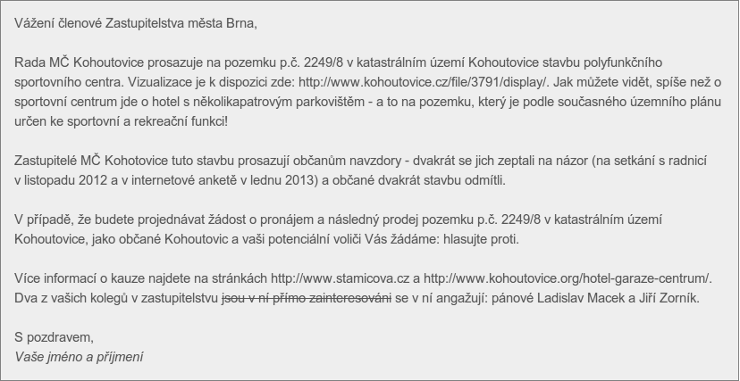

Jedním ze způsobů, jakým můžete dát najevo váš nesouhlas s výstavbou hotelu na louce, je napsat zodpovědným politikům, které jste si zvolili jako své zastupitele. K dispozici máte několik možností:
Pro inspiraci přikládáme vzorový dopis, kterým můžete dát najevo svůj nesouhlas. Inspirací vám rovněž může být Společný dopis Radě MČ Brno-Kohoutovice podepsaný 36 obyvateli zejména z okolních domů a odeslaný na konci února 2013.
Vzorový dopis je úmyslně vložen jako obrázek, text nelze z něj zkopírovat přes Ctrl+C. Chceme, abyste se jím skutečně pouze inspirovali. Kdyby politikům došlo mnoho navlas stejných dopisů, emailový klient by je mohl vymazat jako spam.
Pro inspiraci přikládáme vzorový dopis, kterým můžete dát najevo svůj nesouhlas.
Vzorový dopis je úmyslně vložen jako obrázek, text nelze z něj zkopírovat přes Ctrl+C. Chceme, abyste se jím skutečně pouze inspirovali. Kdyby politikům došlo mnoho navlas stejných dopisů, emailový klient by je mohl vymazat jako spam.
